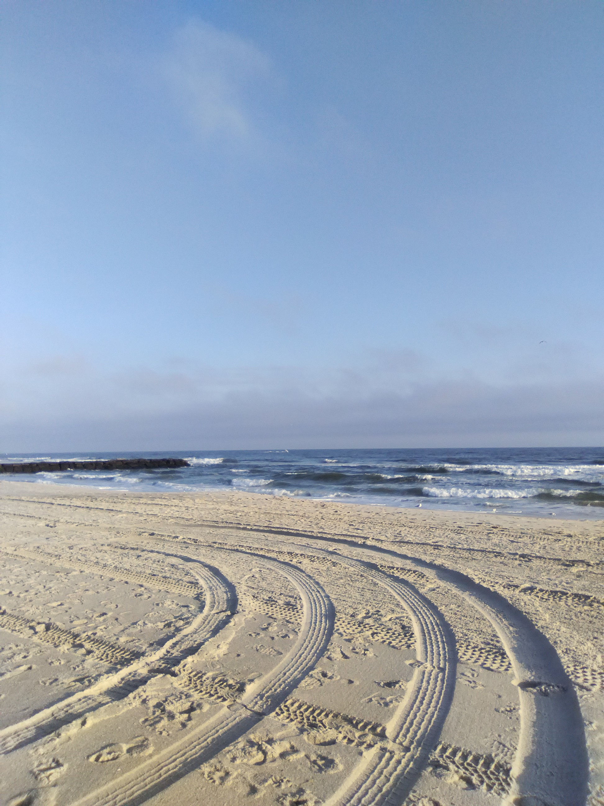

Lately

Listening
Tubular Bells - Mike Oldfield (1973)
Image from Wikipedia

Playing
Fields of Mistria - NPC Studio (2024)
Image from Polygon

Doing
Training for a half-marathon :)
Philadelphia Comics Expo (PCX) ~ Philadelphia, PA
Pictobeach Bazaar ~ Rockaway Beach, NY
Frog Farm Fair II ~ Brooklyn, NY
TCAF ~ Toronto, Canada
Denver Comic and Arts Festival ~ Denver, CO
Brooklyn Indie Comics Expo ~ Brooklyn, NY
Norfolk Indie Comics Expo (NOICE), Special Guest ~ Norfolk, VA
Museum of Comic and Cartoon Fest (MoCCA) ~ NYC
Brooklyn Indie Comics Expo (BICS) ~ Brooklyn, NY
Toronto Comic and Arts Festival (TCAF) ~ Canada
Silverlake Comics ~ Los Angeles, CA
Frog Farm Fair II ~ Brooklyn, NY
Philly Zine Fest ~ Philadelphia, PA
Coney Island Zine Fair ~ Brooklyn, NY
Cartoon Crossroads Columbus ~ Columbus, OH
Pittsburgh Indie Comics Expo (PIE) ~ Pittsburgh, PA
Lancaster Zine Fest ~ Lancaster, PA
Philadelphia Comics Expo ~ Philadelphia, PA
Jersey City Art Book Fair (JAB) ~ Jersey City, NJ
Short Run ~ Seattle, WA
Small Press Expo ~ Bethesda, MD
Chicago Alternative Comics Expo (CAKE) ~ Chicago, IL
Pictobeach Bazaar ~ Brooklyn, NY
Philadelphia Comics Expo ~ Philadelphia, PA
TCAF ~ Canada
Staunton Underground Comic and Zine Fest (SUCZ) ~ Staunton, VA
Tubular Bells - Mike Oldfield (1973)
Image from Wikipedia
Fields of Mistria - NPC Studio (2024)
Image from Polygon

Training for a half-marathon :)